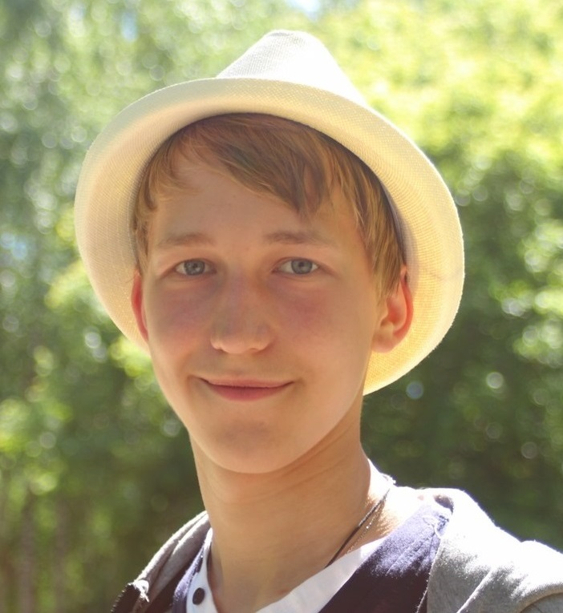

От убийства животного до убийства человека - один шаг.
— Лев Николаевич Толстой
Yambarshev Victor
В 1930-е годы прошлого века физик Джордж Гамоу из университета штата Колорадо начал публиковать мини-сериал рассказов о неком мистере Томпкинсе, банковском клерке средних лет. Мистер Томпкинс, как явствовало из этих историй, интересовался современной наукой.
Мое хобби
Он регулярно посещал вечерние лекции местного университетского профессора и, разумеется, всегда засыпал на самом интересном месте, а проснувшись, обнаруживал себя в каком-нибудь параллельном мире, где один из основных законов физики действовал как в его мире.
Любимые режиссеры:
- Моффат и Гэтисс
- Вачовски
- Кристофер Нолан
- Тим Бёртон
Любимые фильмы:
- Облачный Атлас
- Гаттака
- Я - начало
- Господин Никто